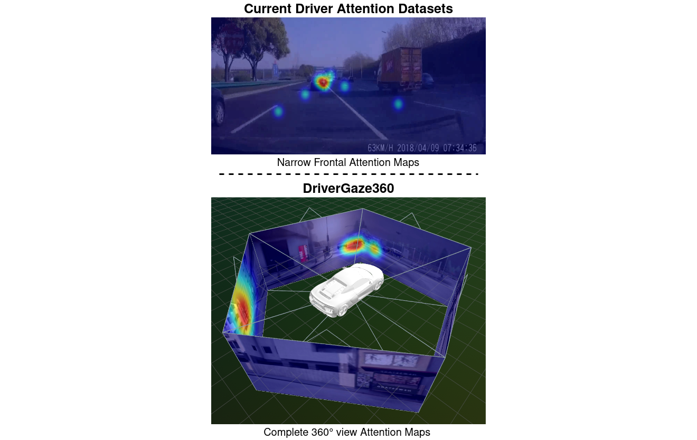
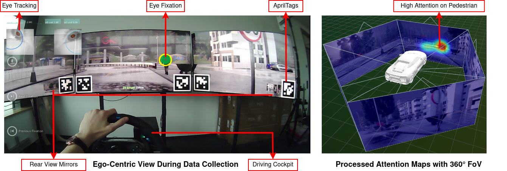
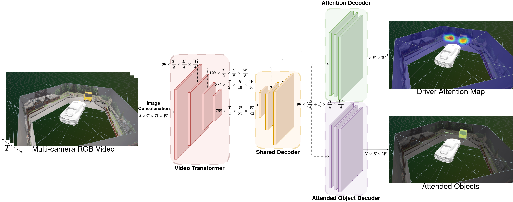
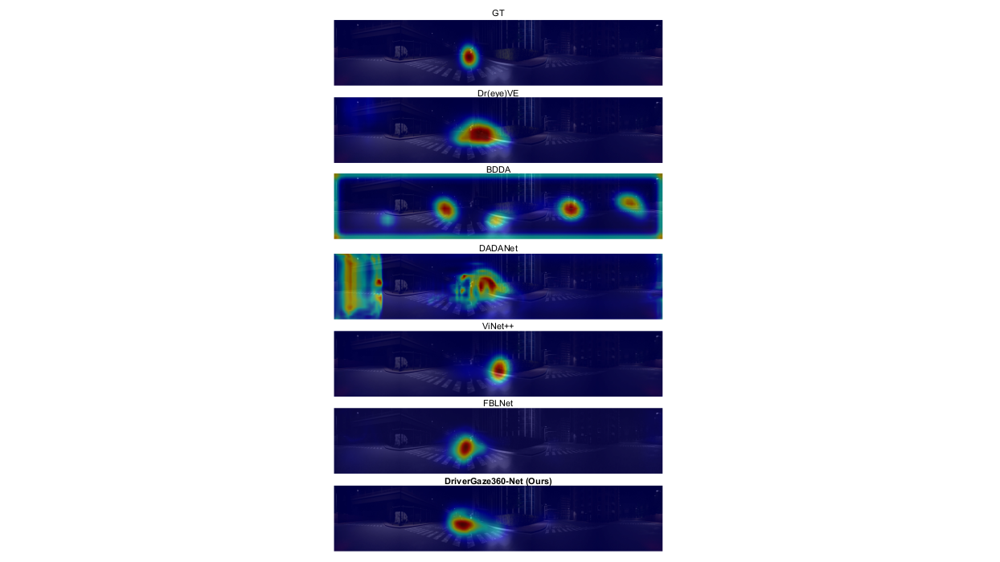

Accepted to CVPR'26 🎉
Abstract
Predicting driver attention is a critical problem for developing explainable autonomous driving systems and understanding driver behavior in mixed human-autonomous vehicle traffic scenarios. Although significant progress has been made through large-scale driver attention datasets and deep learning architectures, existing works are constrained by narrow frontal field-of-view and limited driving diversity. Consequently, they fail to capture the full spatial context of driving environments, especially during lane changes, turns, and interactions involving peripheral objects such as pedestrians or cyclists. In this paper, we introduce DriverGaze360, a large-scale 360-degree field of view driver attention dataset, containing approximately 1 million gaze-labeled frames collected from 19 human drivers, enabling comprehensive omnidirectional modeling of driver gaze behavior. Moreover, our panoramic attention prediction approach, DriverGaze360-Net, jointly learns attention maps and attended objects by employing an auxiliary semantic segmentation head. This improves spatial awareness and attention prediction across wide panoramic inputs. Extensive experiments demonstrate that DriverGaze360-Net achieves state-of-the-art attention prediction performance on multiple metrics on panoramic driving images.
Comparision to Other Datasets
| Dataset | 360° FoV | # Hours | Scenarios | # Subjects | Data Collection |
|---|---|---|---|---|---|
| DR(eye)VE | ❌ | 6 | Regular Driving | 8 | Real driving |
| LBW | ❌ | 7 | Regular Driving | 28 | Real driving |
| BDD-A | ❌ | 4 | Busy Intersections, Emergency Breaking | 1,228 | Watching videos |
| DADA-2000 | ❌ | 6 | Driving Accidents | 20 | Watching videos |
| DriverGaze360 (ours) | ✅ | 9 | Regular Driving, Critical Situations | 19 | Simulated driving |

Existing Work vs Our Method.

Dataset Collection Setup.

Network Architecture.

Prediction Results.
BibTeX
@InProceedings{Govil_2026_CVPR,
author = {Govil, Shreedhar and Stricker, Didier and Rambach, Jason},
title = {DriverGaze360: OmniDirectional Driver Attention with Object-Level Guidance},
booktitle = {Proceedings of the IEEE/CVF Conference on Computer Vision and Pattern Recognition (CVPR)},
month = {June},
year = {2026},
pages = {39786-39795}
}Acknowledgements
This work was partially funded by the European Union's Horizon Europe Research and Innovation Programme under Grant Agreement No. 101076360 (BERTHA) and by the German Federal Ministry of Research, Technology and Space under Grant Agreement No. 16IW24009 (COPPER). The authors would like to express their sincere appreciation to Prateek Kumar Sharma, for his support with data collection and the implementation of driving scenarios. We also gratefully acknowledge Ruben Abad, Alex Levy, and Prof. Antonio M. López from the Computer Vision Center (CVC) for their methodological guidance and for providing the code used to implement the goal-directed navigation routes applied in collecting part of the dataset presented in this study. Finally, we sincerely thank all the participants who contributed to the dataset collection, as well as our colleagues at DFKI for their valuable feedback and support throughout this project.